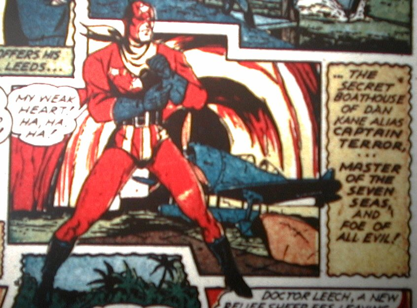

First Appearance: USA Comics #2 (November 1941).
Golden Age Appearances: USA Comics #2-4.
Modern
Appearances: Captain America #442.
Years Active:
1936-1939, 1941-present
Dan Kane seems to be an idle playboy, but he has a deep, dark secret. He used to be Captain Terror. Dan and his friend Bill are discussing the dire situation on the oceans following a Nazi U-boat attack, and Bill says, "We need a man like Captain Terror!!...it's too bad he was killed in Spain a few years ago--" Two panels later Dan Kane muses aloud, "After the Spanish war I preferred to have the people think I was dead." It's clear from context that he was involved, on the side of the good guys, in the Spanish Civil War, but nothing more is said about this, although in USA #2 he says how good it is to be in action again, so he's obviously been out of action for a while. In Captain America #442, set in the modern day, he appears as an aging but still willing hero.
Captain Terror has no superpowers, but he's got his own boat and fighter, and he's a good pilot, sailor, and is (of course) good with his fists.
Note: Roger Stern originally had plans for Captain Terror in the late
and much-lamented Marvel Universe, but alas, those never came to pass.